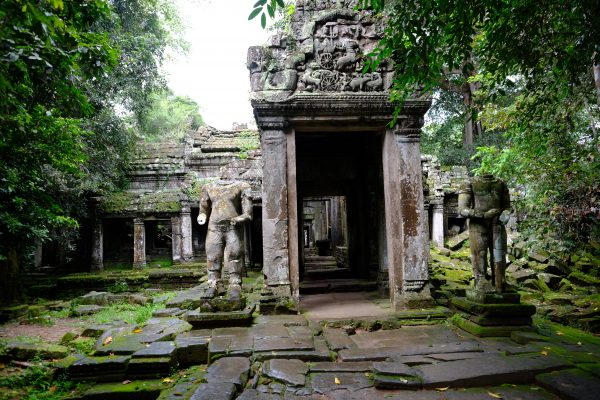
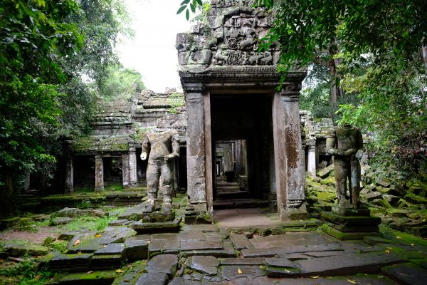

Ce site emblématique, célèbre pour son complexe de temples, dont le temple d'Angkor Wat, l'un des plus grands monuments religieux du monde. Ces derniers sont entourés d'une végétation dense, créant une atmosphère mystique et sereine qui vous surprendra par la manière dont les racines d'arbres millénaires ont pris possession des pierres, créant une fusion unique de nature et d'histoire. Le parc archéologique d'Angkor est également parsemé de nombreux lacs et étangs, où le paysage est reflété dans l'eau, créant des scènes pittoresques pour les photographes et les observateurs de la nature.


 

Les amateurs d'aventure peuvent opter pour des excursions à vélo qui les emmènent à la découverte de la campagne environnante, avec ses villages locaux, ses rizières en terrasses et ses magnifiques paysages naturels. La cité d'Angkor est une destination exceptionnelle qui associe de manière harmonieuse l'histoire ancienne à la beauté naturelle. C'est une invitation à découvrir la richesse de la faune et de la flore cambodgiennes tout en profitant de la majesté des temples antiques.
Nous vous proposons une visiste guidée de deux jours sur le site princpal d’Angkor. Ainsi, vous pourrez profiter lors du troisième jour sur place, d’une journée sans activité prévue. Vous pourrez donc revenir sur des lieux que vous avez partiulièrement apprécié, en découvrir de nouveaux par vous mêmes, échanger avec d’autres touristes, ou encore explorer les environs de la cité. Vous pourrez notamment réaliser une excursion à vélo dans les villages locaux, à travers des routes en pleine forêt, ou vous trouverez de nombreuses espèces que vous n’avez encore jamais vu. Vous pourrez aussi en apprendre plus sur le mode de vie des locaux, si différent du notre.
Voici une séléction de solutions d’hébergements pour votre séjour à la cité d’Angkor. Cette sélécion comprends des logements de plusieurs types (Hôtels, auberges...) afin que vous puissiez loger dans un endroit qui vous plaise, peu importe vos préférences personelles.
Angkor Nature Resort (Eco-resort, piscine...)
Angkor Heritage Village House (Hébergement traditionnel Khmer)
Sunset Templeside Resort (Vue sur les temples)
De même que pour les hébergements, nous vous proposerons ici plusieurs restaurants locaux, afin que vous puissier manger ce qui vous chante, quels que soient vos goûts !
Samlor Korko (Cuisine traditionnelle Khmer)
Villages locaux (Vous y trouverez de nombreux resdtaurants et cantines traditionnelles)
Nous vous conseillions un tuk-tuk entre l’aéroport de Siem-Raep et le site d’Angkor.
| Moyen de Transport | Distance | Durée du trajet | Escale(s) |
Prix | Emission Carbone |
|---|---|---|---|---|---|
| Avion |
9966km |
22h40 |
1 | 670€ |
656kg |